Phase 3 & 4 — listening, offline, submissions and the editorial console
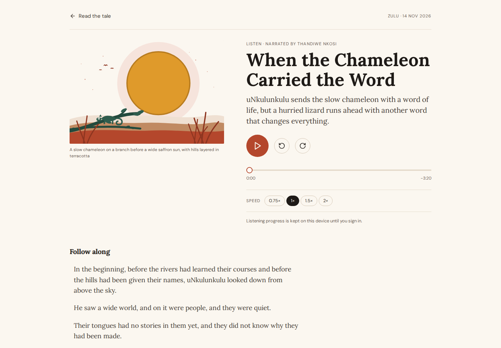
Listen — full player with seek, speed, ambience and follow-along
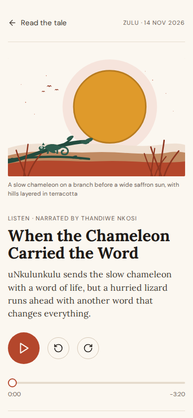
Listen — mobile player
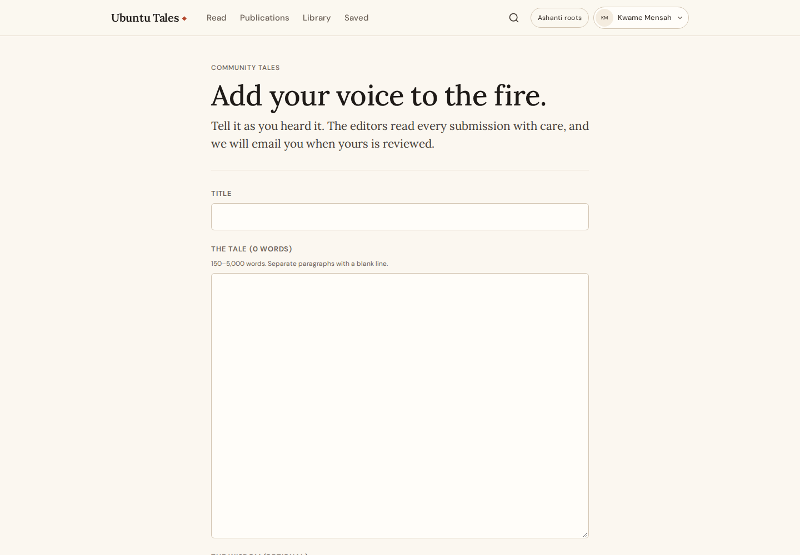
Submit a tale — draft autosave, word count, rights confirmation
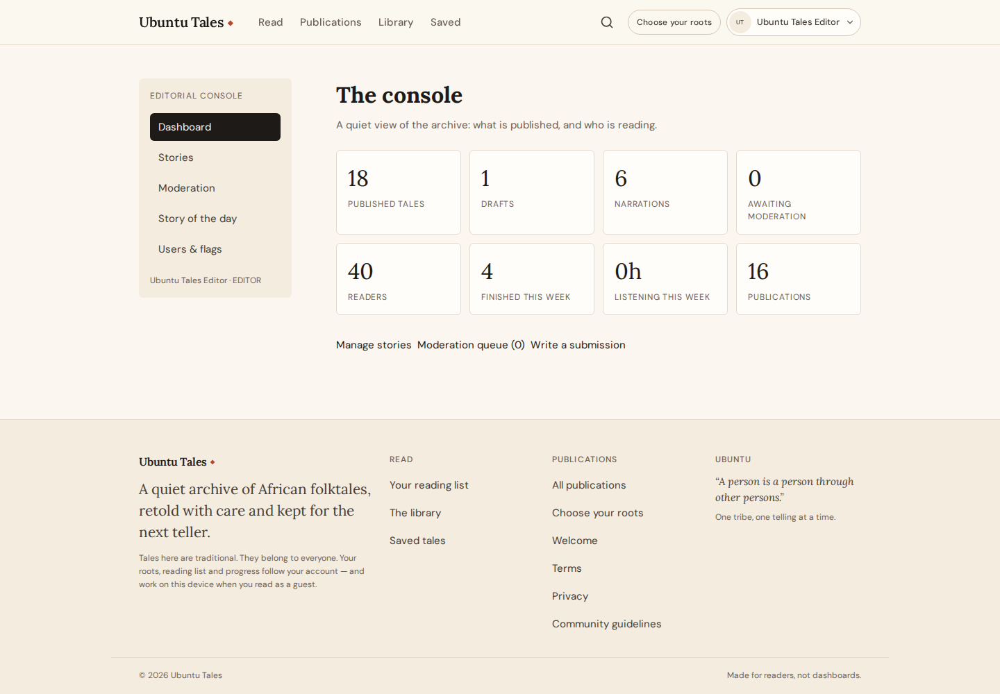
Editorial console — dashboard metrics
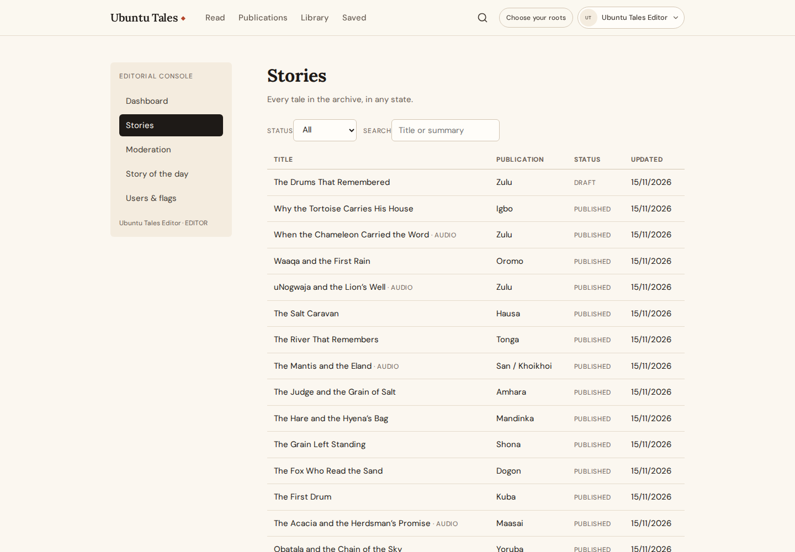
Editorial console — stories list
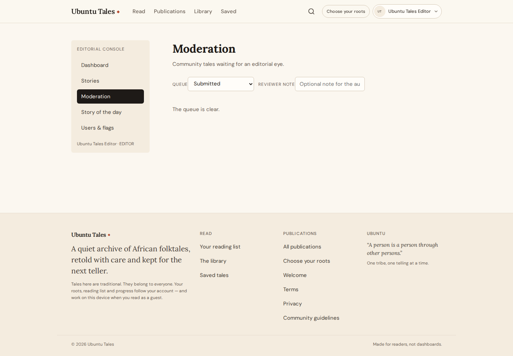
Editorial console — moderation queue
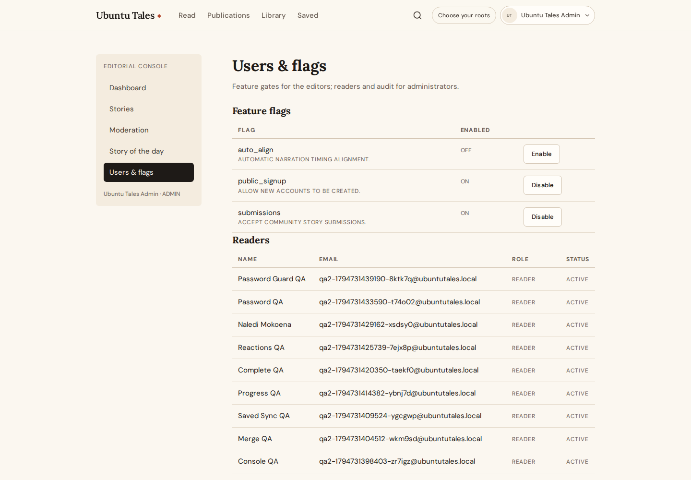
Editorial console — users, flags and audit
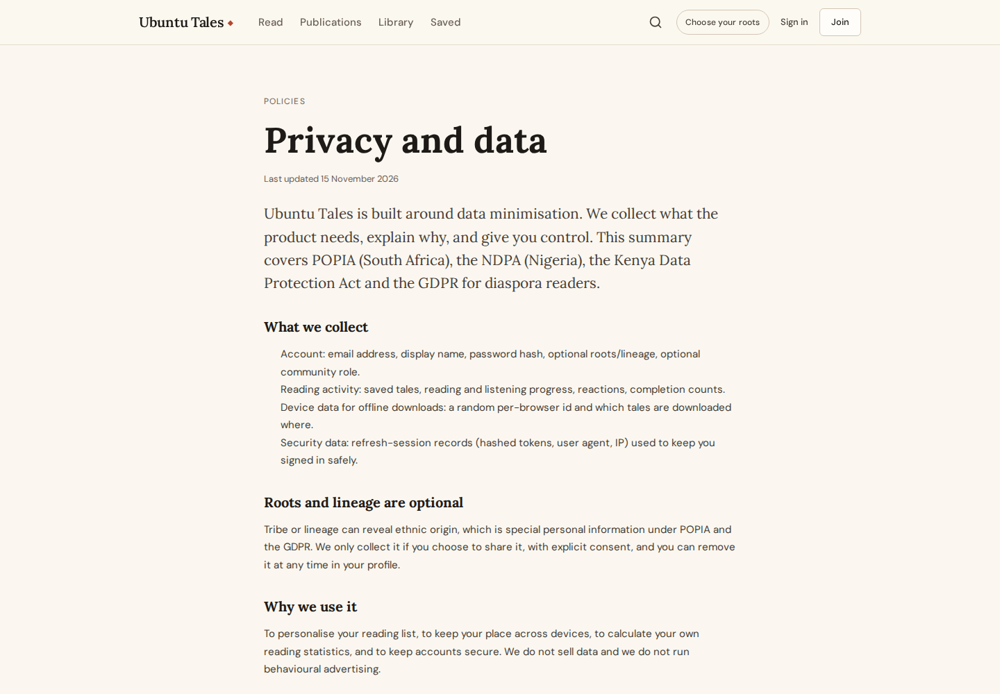
Legal — privacy and data
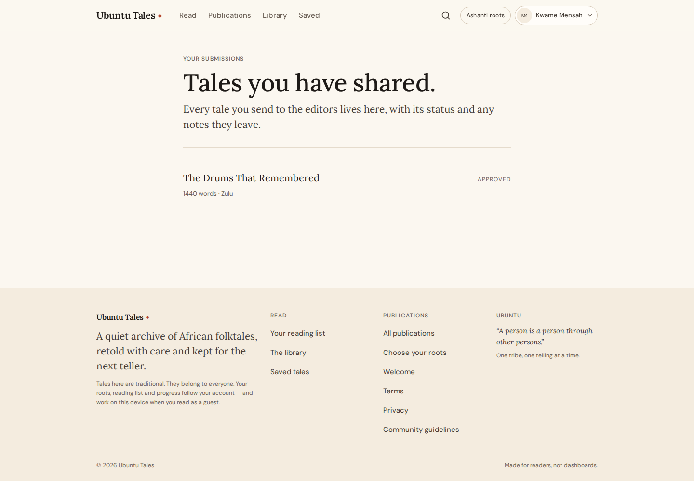
My submissions — status list
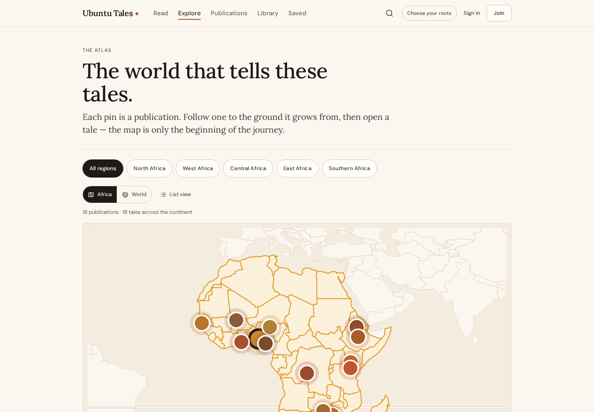
Explore — the atlas, with publications pinned to their homelands
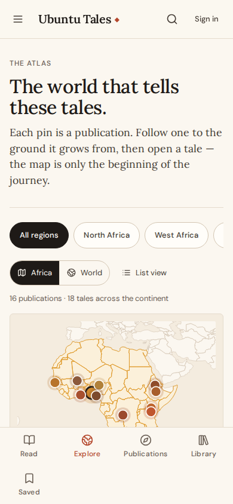
Explore — mobile map view